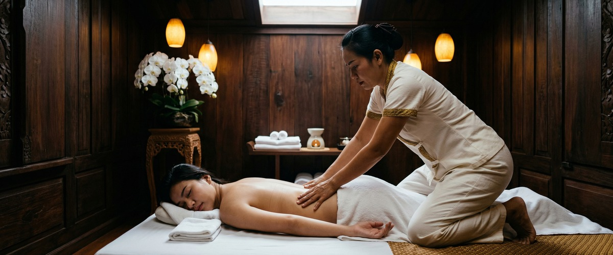
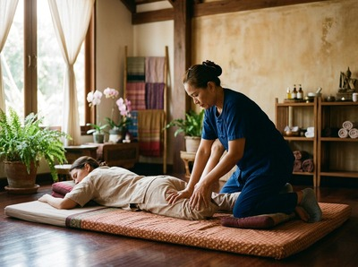

Whether you are recovering from a sports injury, a soft tissue strain, or the lingering effects of a workplace accident, injury rehabilitation can feel like a long and frustrating road.

Pain, stiffness, reduced mobility, and the fear of re-injury follow you through daily life. Thai massage therapy, delivered by a skilled therapist, can play a real role in your recovery. It helps you move better, hurt less, and rebuild trust in your body.
Injury rehabilitation is the process of restoring physical function after damage to muscles, tendons, ligaments, or bones. As Johns Hopkins Medicine describes musculoskeletal rehabilitation, these programmes aim to reduce symptoms and improve function. Most injuries follow a clear pattern: acute inflammation, tissue repair, then a phase where strength and mobility must be actively rebuilt.

Common injuries needing rehab include muscle strains, ligament sprains, tendon injuries, and joint problems. Without the right care, scar tissue can limit movement and compensation patterns can set in.
Full function may never return. Recovery works best when it treats both the injury site and the structures around it.
Massage therapy has a clear role in rehabilitation. A review published on PubMed examining massage for musculoskeletal conditions found that massage reduces pain and improves function.
It works across several areas at once. It boosts circulation to bring oxygen and nutrients to healing tissue. It reduces muscle guarding, softens scar tissue, and supports the drainage that clears post-injury swelling.
At Thai Massage Greenock, Thai Sports Massage is well-suited to injury recovery. It uses deep-tissue pressure, acupressure, and assisted stretching to target the muscles and connective tissues involved in the injury. It also restores flexibility to areas that have become guarded and tight.
Traditional Thai Massage combines acupressure along energy lines with assisted stretching. It works well in the later stages of rehab, where restoring full range of motion is the goal.
Thai Oil Massage uses flowing, targeted strokes to increase circulation and ease the tension that builds when your body compensates for an injury. These treatments work alongside physiotherapy and medical care. They are not a replacement for it.
Jariya Malone trained at Bangkok's Wat Po temple and is the lead therapist at Thai Massage Greenock on South Street in Greenock. She takes a careful, personal approach with every client coming in with an injury.
Every session starts with a conversation. Where is the injury? How did it happen? What stage of recovery are you at? What movements are still restricted? Treatment is built around your answers, not a standard routine.
Sessions may begin by releasing tension in the muscles around the injury before working on the area itself. Pressure is always adapted to your comfort level.
Over a course of treatments, Jariya tracks your progress and adjusts her approach as you recover. You can book your session online and note your injury in the booking form so Jariya can prepare in advance.
Thai massage during rehab works well for a wide range of people. Athletes and active people in Inverclyde returning to training after a soft tissue injury benefit greatly. So do office workers whose posture has led to a repetitive strain or neck injury.
Anyone discharged from physiotherapy who still feels restricted or sore can also benefit. Common injuries like hamstring strains, shoulder problems, ankle sprains, and lower back strains respond well to massage as part of a recovery plan.
If you have an old injury that never fully resolved, targeted massage can help break the cycle of tension and compensation that builds over time.
Get in touch to book your appointment and start moving more freely again.
In most cases, yes. Massage can help at various stages of recovery. The timing and technique depend on the type and severity of your injury.
In the acute phase, while significant inflammation is present, direct massage over the injury site is generally avoided. Jariya will always discuss your injury history before treatment and adapt the session to suit you. If you are unsure, speak to your GP or physiotherapist first.
For most soft tissue injuries, it is best to wait until the acute phase has passed. This is typically 48 to 72 hours after the injury. After that, gentle massage to surrounding areas can ease compensatory tension.
Direct work on the injured tissue usually begins in the sub-acute and remodelling phases. Jariya will assess this on an individual basis.
This depends on the nature and severity of your injury, your stage of recovery, and how your body responds to treatment. Many clients notice real improvement after two to three sessions. A course of four to six sessions is common for moderate injuries.
Monthly maintenance sessions are often recommended once function is restored. Jariya tracks progress across sessions and adjusts her approach as you recover.
Yes. Poorly resolved injuries often leave residual scar tissue, chronic muscle tension, and altered movement patterns. Thai massage, in particular Thai Sports Massage and Traditional Thai Massage with its assisted stretching, can help break down adhesions, restore flexibility, and retrain the surrounding muscles.
Results take time with long-standing patterns, but many clients see real improvement over a course of sessions.
Yes. Massage works best alongside physiotherapy and medical care, not instead of it. A physiotherapist addresses the structural and exercise aspects of recovery. Massage targets muscle tension, circulation, scar tissue, and pain.
The two approaches work well together. If you are currently under physiotherapy care, let Jariya know so she can align her approach with your wider plan.
Thai Sports Massage is the first choice for injury rehabilitation. It uses deep-tissue pressure, acupressure, and assisted stretching to target the muscles and connective tissues involved in your injury. Traditional Thai Massage works well in the later stages of recovery, where restoring range of motion is the focus.
Thai Oil Massage supports circulation and eases the tension that builds in muscles compensating for an injury. Jariya will recommend the right treatment based on your injury and recovery stage. You can book your appointment online to get started.